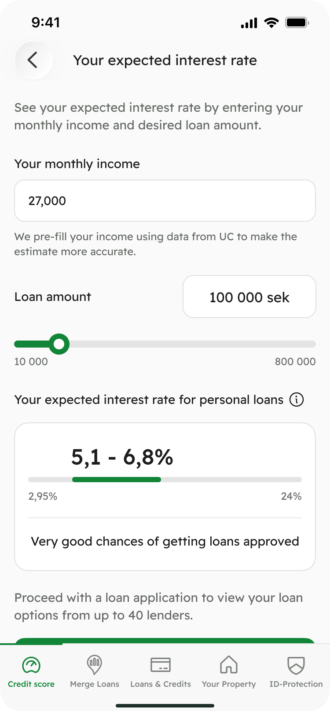
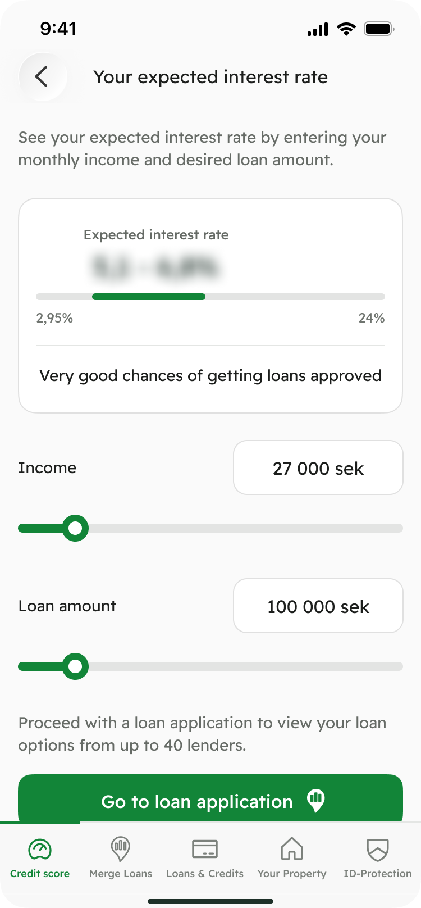
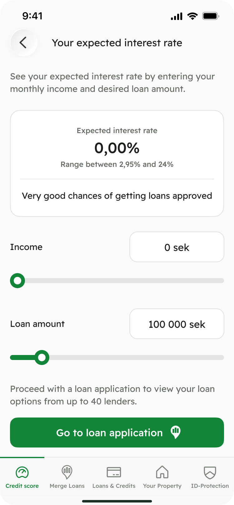
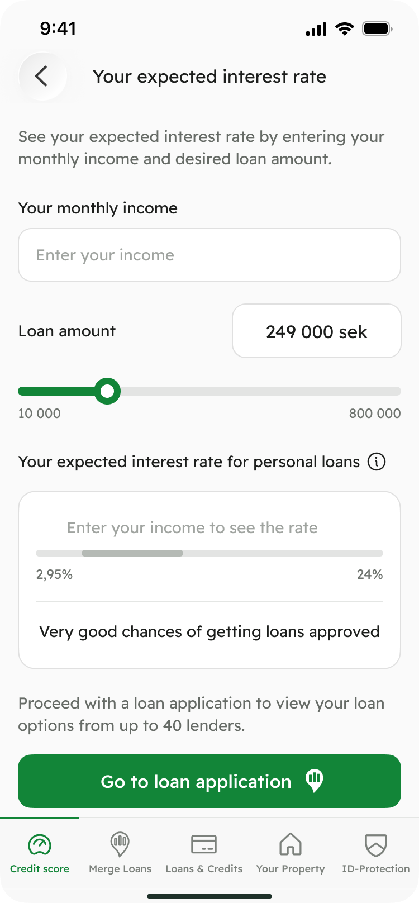

Kreddy · Interest Rate Monitoring
Rethinking interest rate estimation
Redesigned the Interest Rate Monitoring feature to surface value before commitment – while maintaining stable application conversion.
Results
80%→20%
Drop-off at the income step
+300%
Feature adoption
Product context
Kreddy is a B2C personal finance app that helps users understand their credit score, loans, and overall financial health – and explore loan options without upfront commitment.
Interest Rate Monitoring helps users estimate their potential loan rate based on factors like income and loan amount, giving them early clarity before applying.
Problem
Approximately 40% of users dropped off at the income input step when opening Interest Rate Monitoring. Income was requested through a full-screen blocking modal before users could see any prediction, creating early friction and increasing perceived commitment.
Previous experience

Business goal
Increase adoption of Interest Rate Monitoring while maintaining stable loan application conversion.
Discovery & hypothesis framing
Together with the Product Owner and ML team, we explored how surfacing value earlier could reduce friction while preserving trust and conversion.
1. Early commitment before value
Users drop off at the income input step because they are asked to provide personal data before seeing any meaningful value.
2. Lack of early transparency
Users with low approval likelihood continue exploring without understanding their chances, due to a lack of early signals about approval factors.
Alternatives & trade-offs
We explored different ways to integrate income into the IRM flow without blocking access to the prediction.
Trade-off
More information on one screen, requiring careful handling of prediction states.
Income as slider
Presented income as an estimate rather than a precise value, conflicting with user expectations.
Rejected
Income as text input
Presented income as a concrete number, reinforcing clarity and trust.
Selected
Exploring interaction states
Before finalising the flow, I explored how income input and prediction states should be presented before users enter any data.
Pre–filled income
Faster access to prediction, but introduced legal risk and reduced transparency.
Rejected
Hidden prediction state
Reduced cognitive load, but risked making the feature feel unclear or inactive.
Rejected
Unguided empty state
Lacked a clear next step, which could increase hesitation and reduce exploration.
Rejected
Guided empty state
Provided structure while reducing legal risk and supporting exploration.
Selected
Impact
80%→20%
Drop-off at the income step
+300%
Interest Rate Monitoring adoption
We validated the redesign through an A/B test comparing the original flow with the embedded-input variant.
Application conversion remained stable while feature adoption increased, showing that surfacing value earlier encouraged exploration without negatively affecting loan applications.
Following the experiment, the new experience was rolled out to all users.
Reflection
We chose to keep Interest Rate Monitoring within the existing Credit Score experience rather than changing the information architecture or introducing a new entry point.
Working with the ML team also raised a broader question: could the prediction eventually be brought into the loan application, and what additional user inputs could improve its accuracy? We discussed these directions but kept them outside the scope of this iteration.